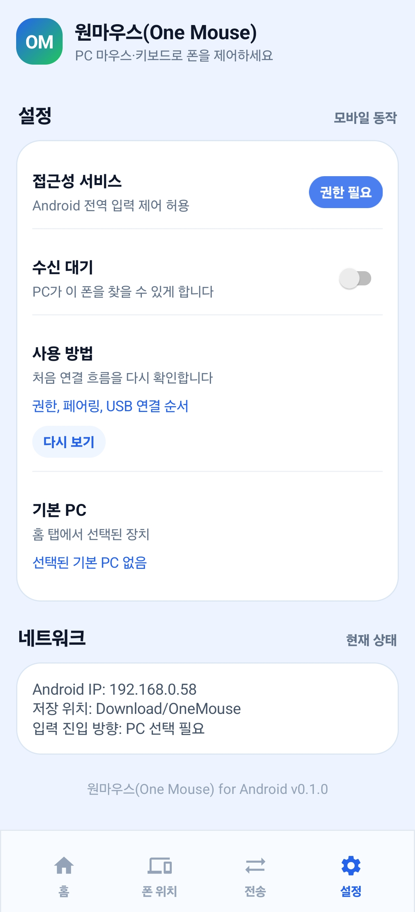

QR 또는 6자리 코드로 페어링
PC 하단에 상시 표시되는 페어링 코드와 QR을 Android에서 바로 사용할 수 있습니다.
What Changed
이제 웹 문서는 단순 소개를 넘어 실제 앱에서 보이는 최신 연결 방식, 권한 순서, 복구 방법을 함께 설명합니다. USB는 아직 일반 배포 기능이 아니라 ADB 기반 실험 연결로 분리해 표기했습니다.
PC 하단에 상시 표시되는 페어링 코드와 QR을 Android에서 바로 사용할 수 있습니다.
같은 네트워크에서는 mDNS로 먼저 찾고, 막히는 환경에서는 기존 UDP discovery가 보조합니다.
개발자 옵션과 ADB가 준비된 환경에서 USB PC를 감지하고 TCP 터널로 연결을 시도합니다.
PC에서 Android로 보내고, Android 공유 메뉴나 클립보드를 통해 PC로 다시 보낼 수 있습니다.
Android 화면 크기와 방향 변화를 다시 반영하고, 삭제된 기기의 배치 잔상을 줄였습니다.
Android로 넘어간 커서가 돌아오지 않으면 PC에서 Ctrl + Alt + Backspace로 강제 복귀할 수 있습니다.
Product Flow
사용자는 복잡한 포트나 transport를 직접 만질 필요 없이 PC와 Android 앱 화면에서 필요한 단계만 따라가면 됩니다.
mDNS, UDP, USB/ADB 중 가능한 경로로 PC가 감지되고 transport 상태가 앱에 표시됩니다.
접근성 권한을 먼저 켠 뒤 QR 스캔 또는 6자리 코드로 같은 기기인지 확인합니다.
PC 모니터 외곽에 Android를 배치하면 그 방향으로 커서를 밀 때 제어가 넘어갑니다.
마우스, 키보드, 파일, 클립보드가 선택된 Android와 PC 사이에서 이어집니다.
Screens
별도 생성 이미지 대신 앱에 들어간 최신 온보딩 캡처를 사용했습니다. 사용자가 앱에서 보는 안내와 웹 설명이 같은 방향을 가리키도록 맞췄습니다.




Connection Paths
같은 Wi-Fi가 가장 일반적인 경로입니다. mDNS가 막힌 공유기나 회사망에서는 UDP fallback이 남아 있고, USB는 Android 개발자 옵션과 ADB가 가능한 환경을 위한 실험 경로로 안내합니다.
FREE / PRO
핵심 연결과 입력 제어는 무료에서도 유지합니다. PRO는 여러 기기 저장, 기기별 위치 고정, 자동 재연결처럼 반복 사용자가 체감하는 편의 기능을 여는 방향입니다.
Download
릴리스 파일을 웹 배포 폴더에 올린 뒤 실제 파일명으로 링크만 교체하면 됩니다. Android는 8.0 이상을 기준으로 하고, PC는 Windows 10/11 환경을 우선 지원합니다.
릴리스 예시: OneMouse-Setup-<version>-x64.exe
Windows 다운로드접근성 서비스와 알림 권한을 켠 뒤 PC와 페어링합니다.
Android APK 다운로드ADB가 PATH 또는 Android SDK 위치에 있고 USB 디버깅이 승인된 환경에서 테스트합니다.
USB 절차 보기